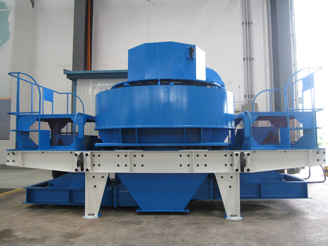

Sand Making Machine
Sand making machine is now belongs to the comprehensive ability of the equipment, crushing ratio, and more appear in the sand making production line or broken production. When the sand making machine in the process of using, but also can hardly be avoided some friction, friction and will make up a part of the temperature, if we do not give timely treatment to eliminate it, so, it is likely to bring serious effect to the production of sand making equipment.
In the sand making machine friction temperature place mostly in the rollers and a belt, and the belt, and the reason for the high temperature are caused by sand long time operation and other issues. At this time, we must be high site of temperature measurement, it is can be timely check the parts under high temperature condition, if once the phenomenon of high temperature, so temperature measuring instrument, will be installed by over temperature signal.
Then, we need to cut off the power to the motor, automatic start stop switch, sand making machine, then, the components can be started overheating protection function. In addition, we should strengthen the sand making machine maintenance measures, especially for the problems of the site, must want to do preventive work to prevent and cure, reduce the failure rate, the responsibility for every employee, and equipment. Over the years, after our continuous efforts, and strive to produce reasonable structure, lower energy consumption, high efficiency, sand making machine, strong production capacity, so that the better the service user. Create economic benefits and more revenue for the enterprise.
The Use of Sand Making Machine
Sand making machine under tension elongation between stocks may not be completely consistent, when the cable motion in the slide and wire holes, in addition to withstand stress will produce sand making machine, steel wire for sand making machine and the initiation of crack, may also be due to the section of reducing wear sand making machine, sand making machine only when subjected to high impact and high stress under the premise to be hardening are fully get better abrasive sand abrasion performance, in order to further improve the mechanical properties of sand making machine, reduce the cost of production, the heat treatment process of sand casting is studied a system: such as pouring waste heat processing, the recrystallization grain refinement heat treatment carbide dispersion, heat treatment, surface hardening heat treatment and so on.
Working Principle of Sand Making Machine
When sand making machine work, massive ore from the hopper to fall on the rejection of the crushing cavity trays, with the rejection of trays of centrifugal force the material thrown inside wall of the cylinder, and attached to the inner wall of the back plate violent collision while material impact each other, so that a large amount of hair breaking or cracking, and then after the material into a conical rotor cavity in space spiral cone whereabouts, by stamping, extrusion, so that there is further broken ore crack. Because of the slope of the cone between the rotor and the liner, prompting smaller materials migrate downward, reaching descending automatically graded broken. Material combat conical rotor cavity under the hammer, high-speed operation block material again and back plate collision, the collision between material flow of materials through the strike, hit, cut, crushed and pulverized to improve crushing efficiency. Conical rotor cavity crushing chamber from falling material into the next, with the aid of centrifugal force thrown reel material to further broken into small particles. Finally, the material enters the cylindrical rotor cavity, which has been broken material grinding, crushing the material further, until broken into desired size.
Features
Sand making machine produced by our company is professional, high-speed railway, highway, municipal buildings, hydroelectric dam construction, concrete mixing station to provide high-quality aggregate, is used so widely, mainly because of the sand making machine has many advantages, it allows you to produce "good", have to choose it.
- 1. Sand making machine has the advantages of simple and reasonable structure, from the hammer crusher, the use of ultra low cost;
- 2. It has a unique design of spindle bearing installation and advanced, so that the machine has the advantages of heavy load and high-speed characteristics. Has finely, coarse grinding function;
- 3. High reliability, high security device, ensure that the equipment and personal safety;
- 4. Smooth running, low noise, high efficiency and energy saving, high efficiency; affected by the material moisture content, water content of about 8%;
- 5. The vulnerability of low loss, all wearing parts are made of high-quality wear-resistant materials at home and abroad, the service life is long.
- 6. Sand making machine is composed of a small number of easily worn parts made of hard and wear-resistant material, has the advantages of small volume, light weight, easy replacement of parts. The vortex chamber internal flow from circulation, little dust pollution. The impeller and the vortex dynamic crushing cavity lining materials since greatly reduce the cost of wear parts and repair work. In the production process, can form a protective stone bottom, body wear, durable.


Request for Quotation
You can get the price list and a MCC representative will contact you within one business day.